ALmaze
Votre chemin dans le code Business Central
Manuel utilisateur · version 1.0.0Présentation
ALmaze est un explorateur du code AL de Microsoft Dynamics 365 Business Central. Il ouvre en lecture seule un projet, un workspace ou un dossier de packages, avec les applications Microsoft dont il dépend, et permet de retrouver en quelques secondes ce que l’on cherche d’habitude à la main dans VS Code ou dans les sources de la Base Application.
Il répond aux questions du quotidien :
- Où est utilisé cet objet, ce champ, cette procédure ? Qui écrit dans ce champ ?
- Qui appelle cette procédure, et que fait-elle à son tour (hiérarchie d’appels) ?
- Jusqu’où va un membre : tables écrites et lues, commits, événements levés, points d’entrée (portée) ?
- Quels abonnés réagissent à un événement, quelles opérations (Insert, Modify, Delete…) touchent une table ?
- Quel jeu de permissions faut-il pour exécuter une fonctionnalité ?
ALmaze ne modifie jamais le code : il le lit, l’indexe et l’affiche. Il fonctionne hors ligne une fois les dépendances téléchargées.
Installation et mises à jour
Télécharger le dernier installeur ALmaze_<version>_x64-setup.exe depuis la page des Releases, puis le lancer. L’installation se fait par utilisateur, dans %LOCALAPPDATA%\ALmaze, sans droits administrateur.
Prérequis : Windows 10 ou 11 x64. Le runtime WebView2, déjà présent sur Windows 11, est téléchargé par l’installeur s’il manque.
Mises à jour. À chaque lancement, ALmaze vérifie s’il existe une version plus récente et la propose dans un bandeau : Installer et redémarrer ou Plus tard. La recherche au lancement se désactive dans Paramètres › Mises à jour, qui permet aussi de chercher à la demande.
Ouvrir un corpus
Un corpus est l’ensemble des applications ouvertes ensemble. L’écran d’accueil propose trois façons de l’ouvrir :
| Choix | Ce qui est chargé |
|---|---|
| Fichier .code-workspace | Tous les dossiers du workspace : projets AL et leurs dossiers .alpackages. |
| Dossier de projet | Un dossier contenant un app.json et ses sources .al. |
| Dossier de packages | Des fichiers .app, avec ou sans sources. |
Le dossier est parcouru récursivement. Chaque application est représentée par ses sources si on les a, sinon par son package de version la plus haute.
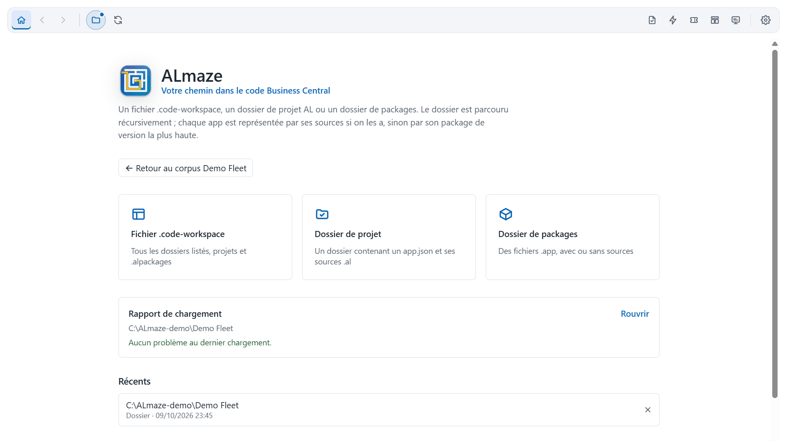
Les récents se rouvrent d’un clic. Sous la liste, la section GitHub permet de se connecter (code à saisir sur github.com, ou jeton personnel) puis d’ouvrir directement un dépôt à une branche ou un tag : il est téléchargé dans un cache local, sans clone.
À l’ouverture, ALmaze analyse les sources et construit un index. Les ouvertures suivantes sont quasi immédiates : seules les applications modifiées sont réanalysées. Les dépendances manquantes peuvent être prises dans les autres dépôts GitHub ou dans les flux publics de Microsoft (voir le rapport de chargement).
La barre d’outils
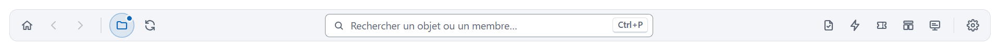
| Élément | Rôle |
|---|---|
| Accueil | Revenir à l’écran d’accueil sans fermer le corpus. |
| Précédent / Suivant | Naviguer dans l’historique des emplacements ouverts (Alt+← / Alt+→). |
| Pastille du corpus | Au survol, se déplie pour montrer le nom, le nombre d’apps et d’objets et l’emplacement du corpus. |
| Actualiser | Recharger le corpus (seules les apps modifiées sont réanalysées) ; pour un dépôt GitHub, vérifier le dernier commit. |
| Rechercher | Ouvrir la recherche rapide (Ctrl+P). |
| Rapport de chargement | Un triangle et un compteur signalent les problèmes à traiter ; sinon une simple icône. |
| Événements | Ouvrir le panneau des événements du corpus. |
| Exporter | Le jeu de permissions en cours, avec le nombre de membres ajoutés (visible dès qu’un membre est ajouté). |
| Paramètres | Thème, densité, sources Microsoft, GitHub, corpus, mises à jour. Une pastille signale un téléchargement en cours ou une mise à jour disponible. |
Chaque bouton affiche son rôle et son raccourci au survol.
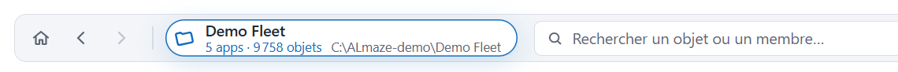
L’explorateur d’objets
À gauche, l’explorateur liste tous les objets du corpus. Une pastille colorée indique le type : T table, P page, CU codeunit, R report, E enum… Les extensions (TE, PE…) ont la couleur de l’objet étendu, en pointillé, et affichent sous leur nom l’objet qu’elles étendent.
Les filtres tiennent sur une ligne :
- Filtrer par nom : texte libre ; le compteur indique les objets affichés sur le total.
- Type et App : choix multiples ; un badge indique le nombre de valeurs cochées.
- ID : un ID seul (
18) ou une plage :50000..59999,50000..ou..59999.
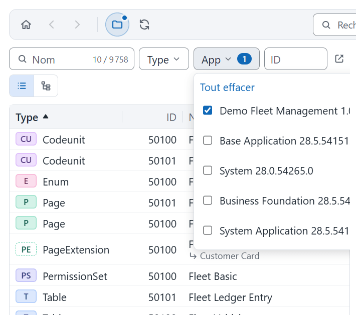
Deux affichages : la liste, triable en cliquant sur les en-têtes (colonnes redimensionnables), et l’arbre App › Type › Objet.
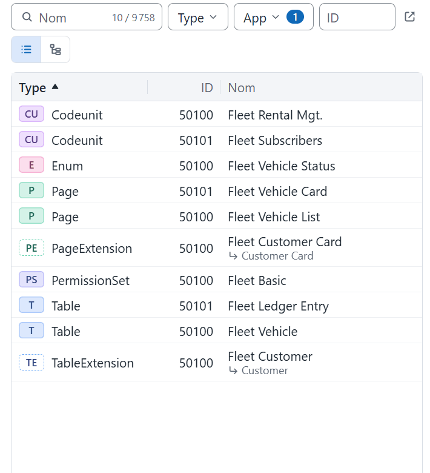
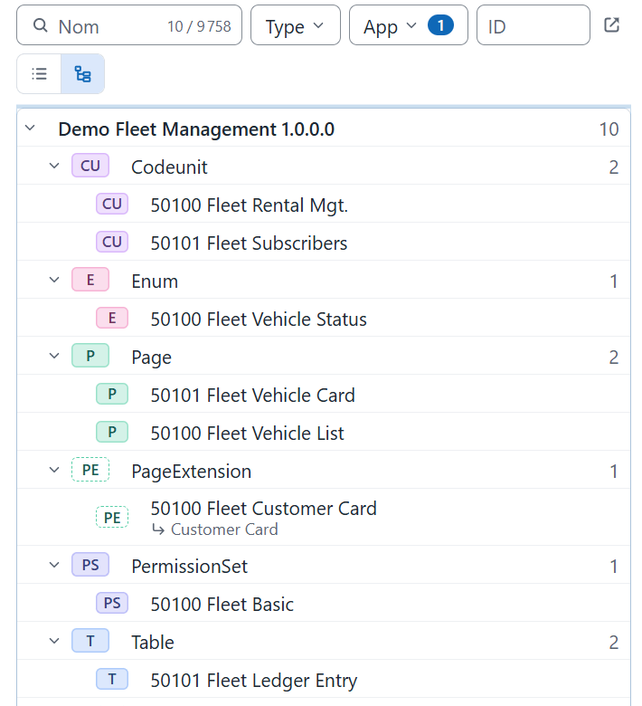
Double-clic ou Entrée ouvre le code de l’objet. Le clic droit propose aussi : Trouver les utilisations (Maj+F12), Diagramme de l’objet (ses relations, dans une fenêtre à part) et, pour une table ou une page, la Vue aplatie (l’objet et toutes ses extensions réunis).
La recherche rapide
Ctrl+P, ou le champ au centre de la barre, ouvre la recherche rapide. Elle trouve un objet ou un membre (champ, procédure, événement…) par son nom, sa caption ou son ID :
Customer,fleet: recherche approximative dans les noms et les captions ;t18,p21,cu80: un objet par son type et son ID ;Customer."No.","Sales-Post".Run: un membre d’un objet.
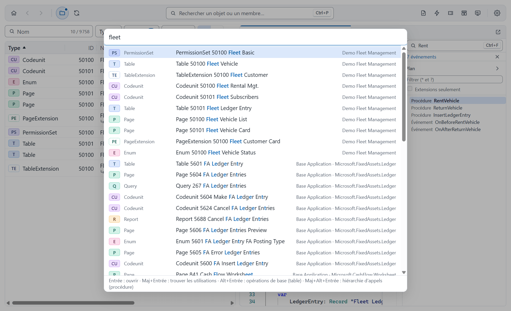
| Touche | Action sur le résultat choisi |
|---|---|
| Entrée | Ouvrir le code, à la ligne du membre. |
| Maj+Entrée | Trouver les utilisations. |
| Alt+Entrée | Opérations de base (table). |
| Maj+Alt+Entrée | Hiérarchie d’appels (procédure). |
Lire le code
Chaque objet ouvert a son onglet. L’éditeur est en lecture seule, avec la coloration AL. Au-dessus du code : le fichier source, les actions sur l’objet et Aller au membre…. À droite, le plan de l’objet (champs, clés, procédures, triggers, événements) se filtre et suit le curseur.
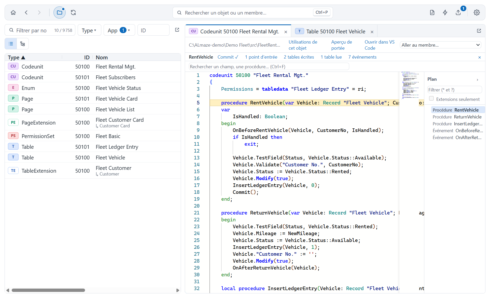
Quand le curseur est dans une procédure, le bandeau de portée résume ce qu’elle atteint : commit, points d’entrée, tables écrites et lues, événements. Chaque élément ouvre le détail.
Ctrl+F met le focus sur Rechercher un champ, une procédure… ; F12 ou Ctrl+clic va à la définition. Le clic droit dans le code propose toutes les recherches sur le membre sous le curseur :
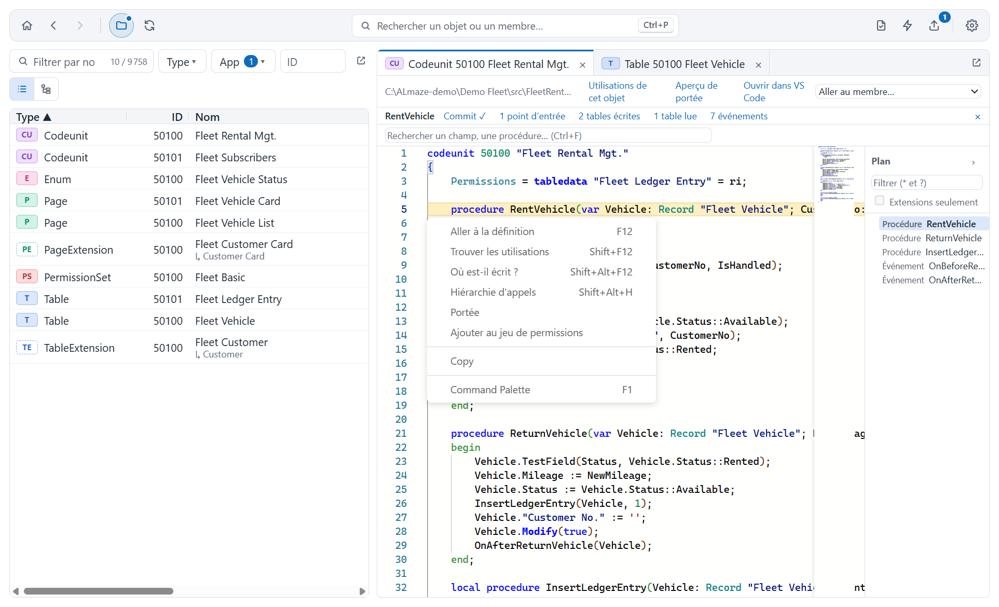
| Commande | Raccourci | Résultat |
|---|---|---|
| Aller à la définition | F12 | Ouvre l’objet, le champ ou la procédure. |
| Trouver les utilisations | Maj+F12 | Panneau des utilisations. |
| Où est-il écrit ? | Maj+Alt+F12 | Les affectations et écritures d’un champ. |
| Hiérarchie d’appels | Maj+Alt+H | Appelants et appelés de la procédure. |
| Portée | Tout ce que le membre atteint. | |
| Ajouter au jeu de permissions | Ajoute le membre au panier de permissions. |
Ouvrir dans VS Code ouvre le fichier à la même ligne quand l’objet vient d’un projet sur disque.
Trouver les utilisations
Le panneau des utilisations s’ouvre en bas de la fenêtre. Les résultats sont groupés par application puis par objet ; chaque ligne donne le numéro de ligne, le genre d’utilisation, le membre qui la contient et l’extrait de code. Un clic ouvre le code à cet endroit.
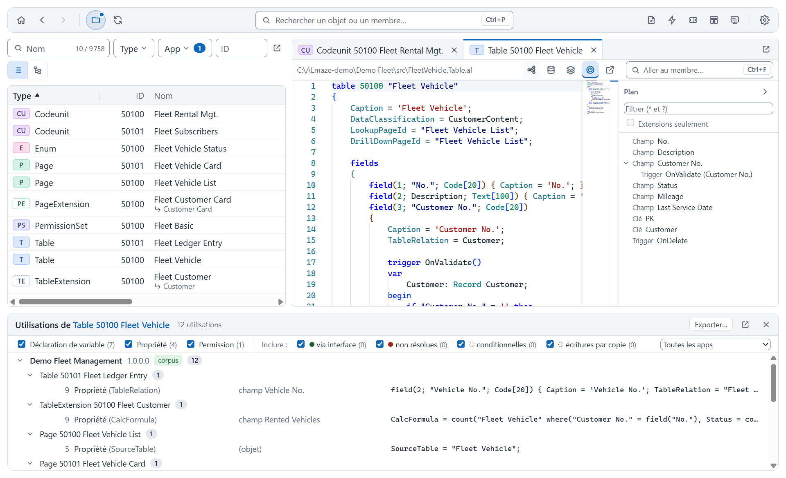
- Cases du haut : genres d’utilisation (déclaration de variable, propriété, permission…) et cas particuliers (via interface, conditionnelles, non résolues, écritures par copie).
- Liste de droite : chercher dans les apps du workspace ou dans tout le corpus.
- Exporter CSV enregistre les résultats affichés.
Opérations de base sur une table
Sur une table ou une extension de table, Opérations de base liste tous les Insert, Modify, Delete, Rename et Validate qui la touchent, avec leur persistance (persistante, temporaire, indéterminée) et la valeur de RunTrigger. L’onglet Réactions montre les triggers et les abonnés qui s’exécutent en conséquence.
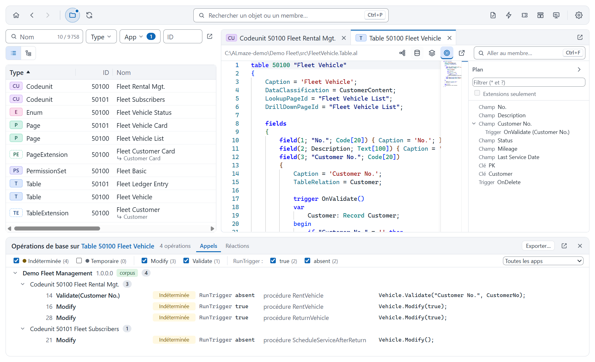
Hiérarchie d’appels
Maj+Alt+H sur une procédure ouvre sa hiérarchie d’appels. Appelants remonte vers ceux qui l’appellent, jusqu’aux points d’entrée (actions de page, triggers…) ; Appelés descend dans ce qu’elle appelle. Chaque niveau se déplie à la demande.
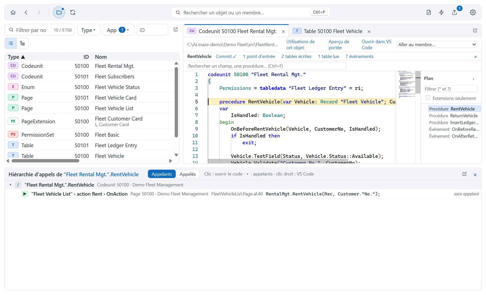
La portée d’un membre
La portée répond à « jusqu’où va ce membre ? ». Elle suit les appels, les triggers et les abonnés aux événements, et classe ce qui est atteint en sections :
- Points d’entrée : d’où l’utilisateur peut déclencher ce code ;
- Commits : les Commit atteints, avec le chemin ;
- Écritures et Lectures : les tables touchées, leur persistance et le nombre d’étapes ;
- Événements : les événements levés et leurs abonnés ;
- Permissions : le jeu de permissions requis et ses angles morts.
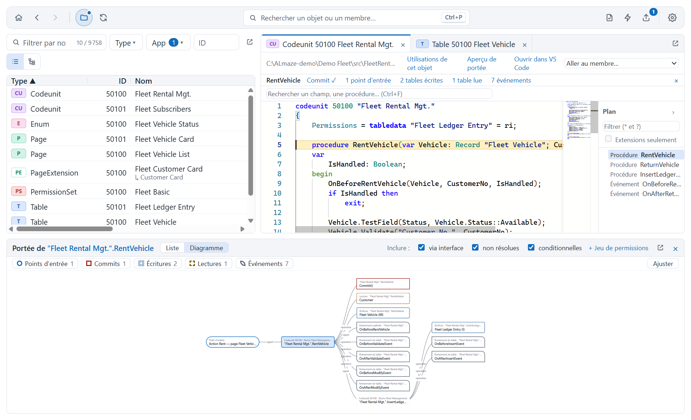
L’affichage Diagramme dessine le membre et tout ce qu’il atteint, en couches par nombre d’étapes. Les cases du haut affichent ou masquent chaque section.
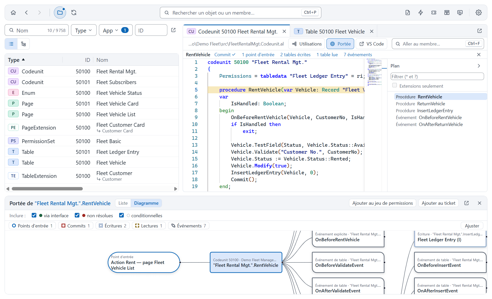
Les événements du corpus
L’icône Événements de la barre ouvre la liste de tous les événements du corpus : publisher, nom, nombre de levées et d’abonnés. Les filtres acceptent des motifs (OnBefore*Post*, *Vehicle*) sur l’événement et sur l’objet. Un clic sur un événement montre où il est levé et qui y est abonné.
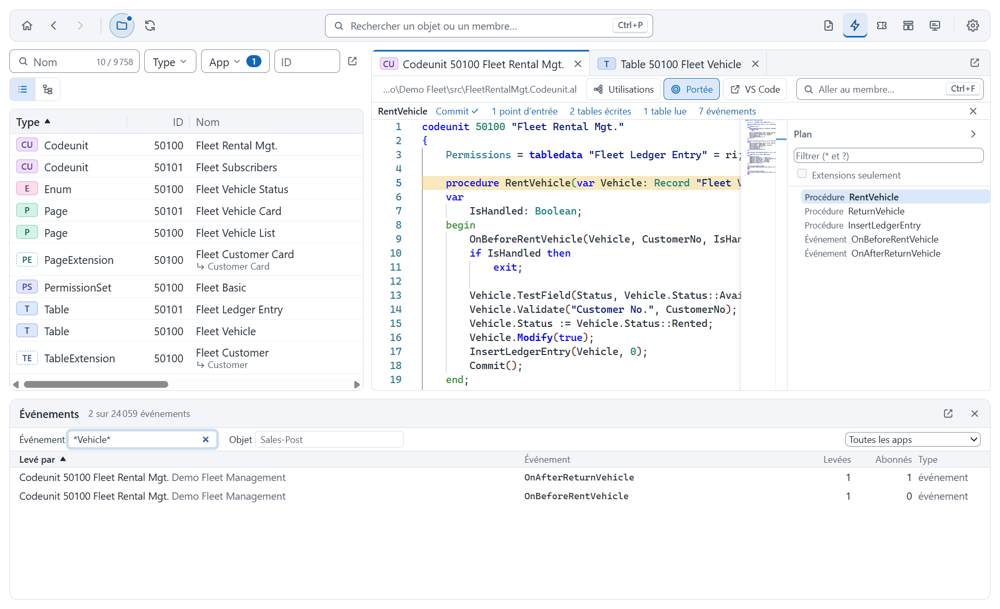
Le jeu de permissions
Pour construire le jeu de permissions d’une fonctionnalité, ajouter ses membres au panier : Ajouter au jeu de permissions dans le menu contextuel du code ou dans la portée. Le panneau Jeu de permissions calcule les droits requis (R, I, M, D, X) objet par objet, avec leur justification et le chemin le plus court, et liste les angles morts à vérifier (persistance indéterminée, abonnés globaux…).
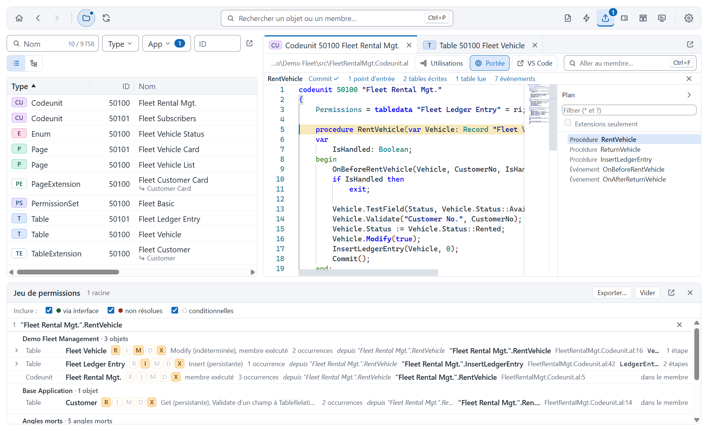
L’icône Exporter de la barre (ou Exporter… dans le panneau) produit un fichier XML importable dans Business Central, ou un objet AL permissionset.
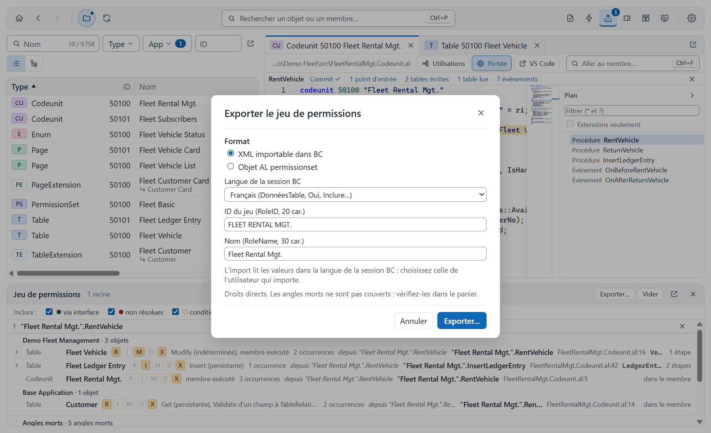
Le rapport de chargement
L’icône du rapport s’ouvre en trois onglets :
- Problèmes : dépendances manquantes (avec Résoudre, qui les cherche dans les dépôts GitHub puis dans les flux Microsoft), sources mal analysées, packages illisibles ;
- Dépendances : les dépendances résolues et leur origine ;
- Écartés : pour information, les packages runtime ignorés et les doublons écartés.
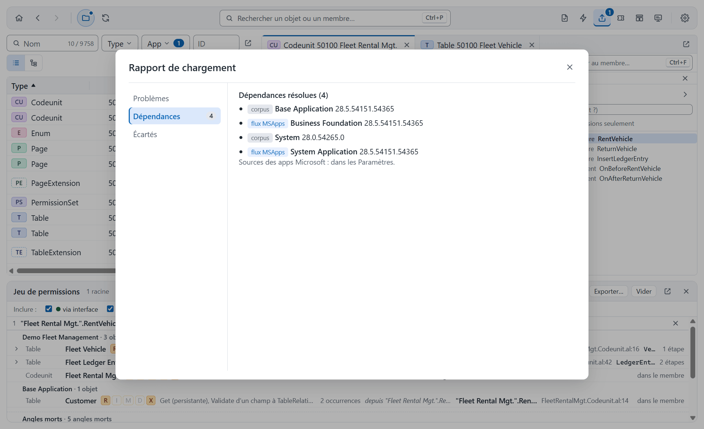
Les paramètres
La roue dentée ouvre les paramètres, en cinq onglets.
Apparence : trois thèmes (Classique, Dark mode, Sobre) et deux densités (Confortable, Compacte : police, contrôles et lignes plus serrés).
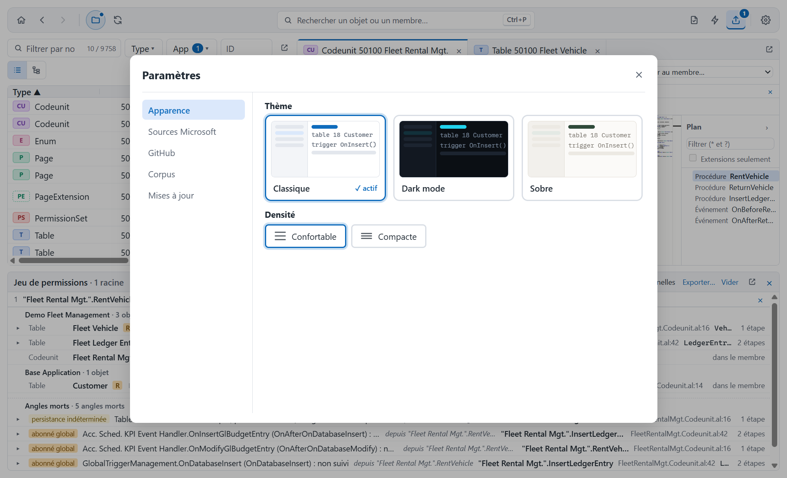
Sources Microsoft : les applications Microsoft du corpus et l’état de leurs sources. Sans sources, ALmaze ne cherche pas d’utilisations dans leur code : Charger les sources les télécharge depuis le flux Microsoft, et toujours les télécharge à chaque ouverture.
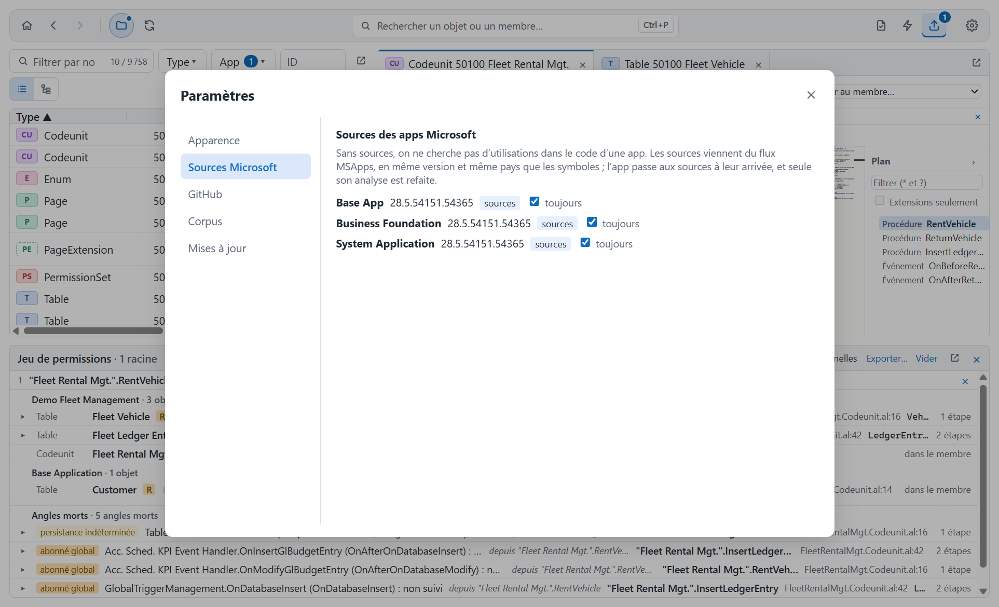
GitHub : le compte connecté, la connexion et la déconnexion.
Corpus : Réindexer tout (ignorer l’index enregistré et tout réanalyser) et Chercher de nouveau les dépendances refusées.
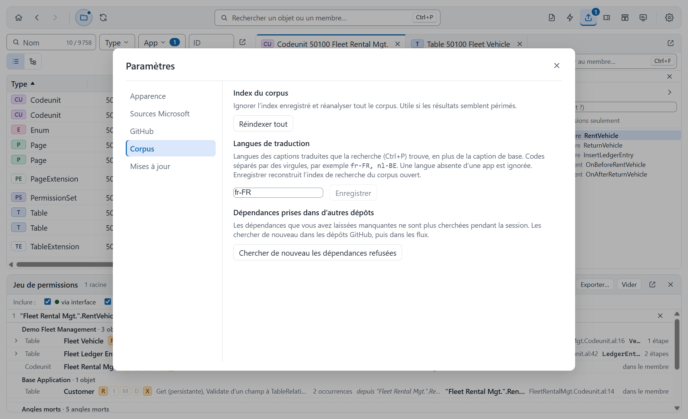
Mises à jour : la version installée, la recherche au lancement et la recherche à la demande.
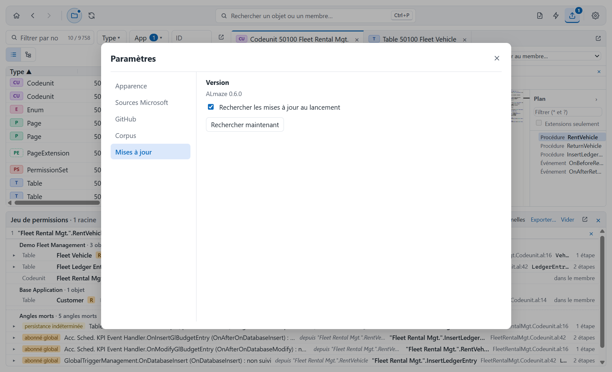
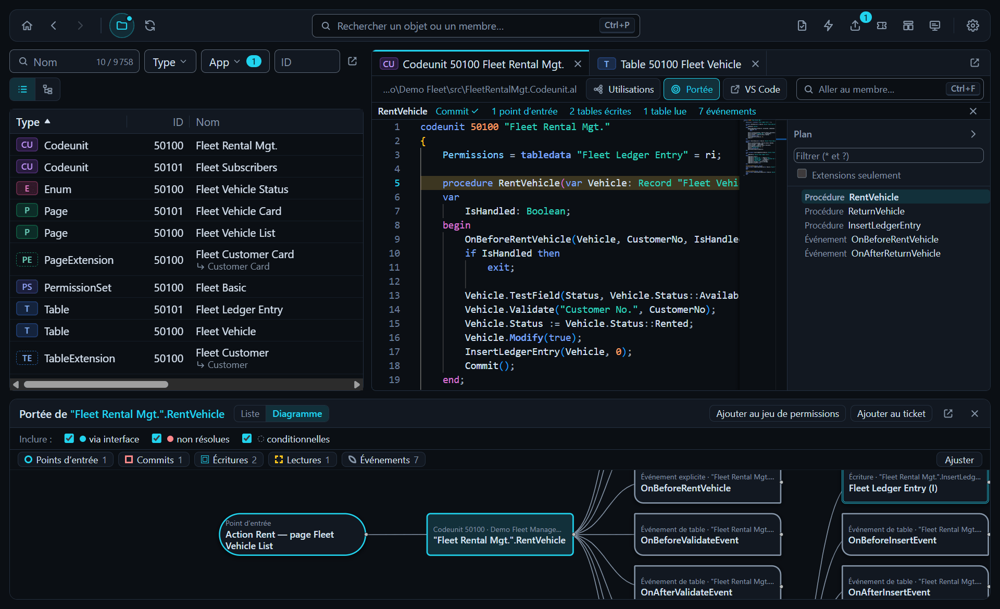
Fenêtres et disposition
- Les séparateurs entre l’explorateur, le code et le panneau du bas se déplacent à la souris ; un double-clic rétablit la taille par défaut.
- Le bouton Détacher, en haut à droite de l’explorateur, du code et de chaque panneau, ouvre la zone dans une fenêtre séparée, par exemple sur un second écran. Rattacher la remet dans la fenêtre principale.
- Quand plusieurs panneaux sont ouverts en bas (utilisations, portée, jeu de permissions…), des onglets permettent de passer de l’un à l’autre.
Pour les assistants IA : le serveur MCP
ALmaze installe aussi alob-mcp.exe, un serveur MCP qui donne aux assistants (Claude Code, GitHub Copilot, Cursor) les mêmes recherches que l’application : objets, sources, utilisations, opérations, événements, appelants, portée, écritures. Il réutilise l’index des corpus déjà ouverts.
Exemple pour Claude Code :
claude mcp add alob -- "%LOCALAPPDATA%\ALmaze\alob-mcp.exe" --corpus C:\chemin\du\corpusRaccourcis clavier
| Raccourci | Action |
|---|---|
| Ctrl+P | Recherche rapide |
| Entrée / double-clic | Ouvrir le code de l’objet choisi |
| F12 / Ctrl+clic | Aller à la définition |
| Maj+F12 | Trouver les utilisations |
| Maj+Alt+F12 | Où est-il écrit ? |
| Maj+Alt+H | Hiérarchie d’appels |
| Ctrl+F | Chercher un membre dans le code |
| Ctrl+Maj+O | Aller à un symbole de l’objet |
| Alt+← / Alt+→ | Précédent / Suivant |
| Échap | Fermer une fenêtre ou un menu |